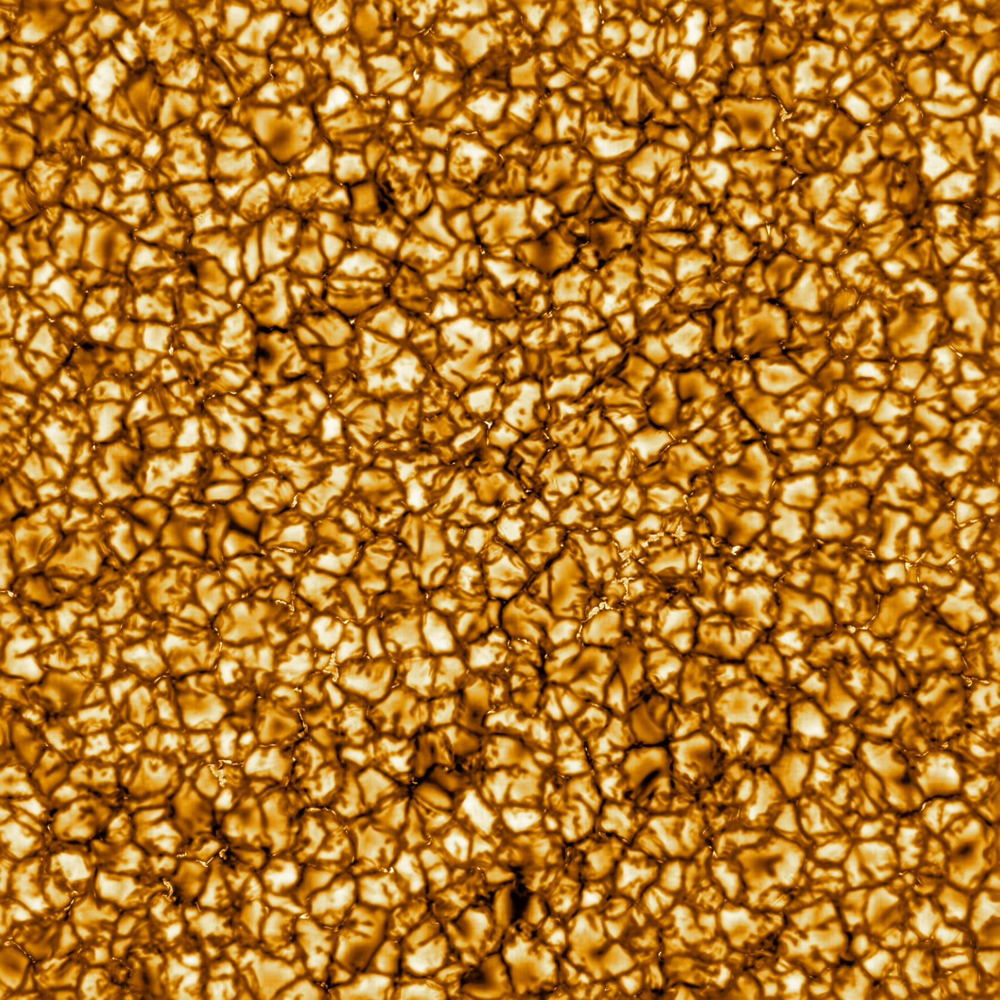

Solar physics · Queen’s University Belfast
Ryan J. Campbell.
Solar physicist and lecturer working on spectropolarimetry and AI-based atmospheric inference.
The Sun in detail
A closer look at
solar granulation.
DKIST resolves the intricate pattern of convection at the Sun’s surface. Bright granules are separated by darker intergranular lanes.
Explore the high-resolution image ↗

Observations meet inference
Revealing the solar atmosphere.

Research focus
From solar spectra to atmospheric inference.
My work brings together solar spectropolarimetry and AI-based inference. Potential PhD research spans observations, numerical modelling, radiative transfer and machine learning.
For prospective researchers
A PhD in solar physics.
I am open to supervising PhD students in observational and computational solar physics. I am also open to interdisciplinary projects. Projects can be tailored to students with backgrounds or interests in astrophysics, data analysis, numerical modelling or machine learning.
Discuss a possible project →